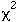
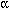

Lorsqu’aucun terme spécifique n’est disponible, le Comité d’étude des termes techniques français (Paris, 1963) propose de traduire “pattern” par le mot français “patron” en le chargeant de tout le contenu sémantique de “pattern” (X, 1966).
| English | Français |
| absolute deviation | écart absolu |
| absolute frequency | fréquence absolue |
| abundance class | classe d’abondance |
| abundance score | cote d’abondance |
| accuracy (of an estimator) | exactitude (d’un estimateur) |
| aliasing | repliement |
| alternating least squares method | méthode des moindres carrés alternés |
| alternative hypothesis | hypothèse contraire, contre-h., H1 [“hypothèse alternative” est un anglicisme] |
| analysis | analyse |
| — association a. | — a. associative |
| — canonical a. | — a. canonique |
| — canonical correspondence a. (CCA) | — a. canonique des correspondances (ACC) |
| — canonical redundancy a. (RDA) | — a. (canonique) de redondance (ACR) |
| — cluster a. | — a. de groupement |
| — confirmatory factor a. | — a. factorielle confirmatoire |
| — correspondence a. (CA), contingency table a., RQ-technique, reciprocal averaging, reciprocal ordering, dual scaling, homogeneity a. | — a. (factorielle) des correspondances (AFC) |
| — detrended correspondence a. | — a. (factorielle) des correspondances redressée |
| — discrete discriminant a. | — a. discriminante discrète |
| — (multiple) discriminant a., canonical variate a. | — a. discriminante (multiple) |
| — dissimilarity a. | — a. de dissemblance, de dissimilarité |
| — exploratory factor a. | — a. factorielle exploratoire |
| — factor a. (exploratory, confirmatory) | — a. factorielle (exploratoire, confirmatoire) |
| — gradient a. | — a. des gradients |
| — harmonic a. | — a. harmonique |
| — information a. | — a. informationnelle |
| — maximum entropy spectral a., MESA | — a. spectrale par entropie maximum |
| — multiple classification a. | — a. de classification multiple |
| — multivariate nominal scale a. | — a. multivariable d’un descripteur qualitatif |
| — network a. | — a. par réseau |
| — (orthogonal) Procrustes a. | — a. (orthogonale) Procruste |
| — path a. | — a. des coefficients de direction |
| — principal component a. (PCA) | — a. en composantes principales (ACP) |
| — principal component a. in the frequency domain | — a. en composantes principales des spectres multivariables |
| — principal coordinate a. (PCoA) | — a. en coordonnées principales (ACoP), a. factorielle d’un tableau de distances |
| — redundancy a. (RDA) | — a. (canonique) de redondance (ACR) |
| — spatial a. | — a. spatiale |
| — spectral a. | — a. spectrale |
| analysis of covariance (ancova) | analyse de covariance |
| analysis of variance (anova) | analyse de variance |
| — a. of v. by ranks | — a. de v. de rangs |
| — anova table | — tableau d’analyse de variance |
| — multivariate anova (manova) | — a. de v. multidimensionnelle |
| — multiway a. of v. | — a. de v. à plusieurs critères de classification |
| — one-way a. of v. | — a. de v. à un critère de classification |
| — two-way (two factor) a. of v. | — a. de v. à deux critères de classification |
| anisotropic | anisotrope |
| anisotropy | anisotropie |
| arch effect | effet d’arche |
| array | tableau |
| assay, bioassay, biological assay | essai (biologique) |
| association coefficient | coefficient d’association |
| assumption | supposition |
| attribute | variable qualitative |
| autocorrelated errors | erreurs autocorrélées |
| autocorrelated residuals | résidus autocorrélés |
| autocorrelation, serial correlation | autocorrélation, corrélation en série |
| (auto)correlogram | (auto)corrélogramme |
| autocovariance | autocovariance |
| autoregression | autorégression |
| average deviation | écart moyen |
| axis | axe |
| — canonical a. | — a. canonique |
| — discriminant a. | — a. discriminant |
| back transformation | rétrotransformation |
| back-transformed statistic | statistique rétrotransformée |
| back-up copy | copie de secours |
| backward elimination | élimination descendante, é. régressive |
| balanced incomplete block design | plan à blocs incomplets compensés, plan à blocs incomplets équilibrés |
| balanced, unbalanced design | plan équilibré, plan non équilibré |
| Bartlett’s three-groups method | méthode des trois groupes de Bartlett |
| barycentre, centre of gravity (of a set of vectors) | barycentre |
| behaviour pattern | sortie motrice unitaire, SMU |
| bell-shaped curve | courbe en cloche |
| benchmark | test de performance |
| binomial sample | échantillon binomial |
| bioassay | essai biologique |
| biplot | (diagramme de) double projection |
| bit (contraction of: binary digit) | bit |
| bivariate | à deux variables, bivariable |
| block clustering (of objects and variables) | groupement par blocs (d’objets et de variables) |
| Bonferroni correction | correction de Bonferroni |
| bootstrap | bootstrap |
| bounded | borné |
| broken stick | bâton brisé |
| Buys-Ballot table | table de Buys-Ballot |
| canonical analysis | analyse canonique |
| canonical correlation analysis | analyse des corrélations canoniques |
| canonical form | forme canonique |
| canonical variate | variable canonique |
| case | cas, objet, spécimen |
| causal closure | causalité fermée |
| causal modelling | modélisation causale |
| causal order | ordre causal |
| causality | causalité |
| categorical data | variable ordinale |
| cell (in a contingency table) | case (d’un tableau de contingence) |
| cell frequency (in a contingency table) | fréquence ou effectif par case |
| central moment | moment centré |
| central limit theorem | théorème de la limite centrale |
| centroid | centroïde |
| chain | chaîne |
| — c. of primary (or external) connections: see minimum spanning tree | |
| chaining | enchaînement |
| character | caractère |
| characteristic equation | équation caractéristique |
| chart | abaque |
| chi-square,  | khi carré, |
| — contribution to c.-s. | — contribution au khi carré |
| — chi-square statistic | — statistique khi-carré |
| — chi-square(d) distribution | — distribution ou loi du khi carré |
| chord distance | mesure de corde |
| class mark | indice de classe |
| classification scale | échelle qualitative |
| classification table, classification matrix, confusion matrix (in discriminant analysis) | tableau croisé de classification (en analyse discriminante) |
| cluster | groupe (grappe) |
| cluster analysis | groupement, analyse de groupement |
| clustering | groupement |
| — absolute resemblance c. | — g. selon la ressemblance absolue |
| — agglomerative c. | — g. agglomératif |
| — average c. [generic term that includes UPGMA, WPGMA, UPGMC, WPGMC] | — groupement moyen [terme générique incluant UPGMA, WPGMA, UPGMC, WPGMC] |
| — average linkage c. | — g. à liaison moyenne |
| — chronological c. | — g. chronologique |
| — combinatorial c. | — g. combinatoire |
| — complete linkage c., furthest neighbour sorting | — g. à liens complets |
| — descriptive c. | — g. descriptif |
| — divisive c. | — g. par division |
| — flexible c. | — g. flexible |
| — integer-link linkage c. | — g. à liaison entière |
| — intermediate linkage c. | — g. à liens intermédiaires |
| — proportional-link linkage c. | — g. à liaison proportionnelle |
| — relative resemblance c. | — g. selon la ressemblance relative |
| — single linkage c., nearest neighbour c. | — g. à liens simples |
| — sum of squares c. | — g. par la somme des carrés |
| — synoptic c. | — g. synoptique |
| — unweighted arithmetic average c., UPGMA, group-average sorting | — g. selon l’association moyenne |
| — unweighted centroid c., UPGMC | — g. centroïde |
| — weighted arithmetic average c., WPGMA | — g. à poids proportionnels |
| — weighted centroid c. WPGMC | — g. médian |
| cluster sampling | échantillonnage (ou sondage) par groupes ou grappes |
| coding | codage |
| coefficient | coefficient |
| — association c. | — c. d’association |
| — asymmetrical (similarity or distance) c. | — c. (de similarité ou de distance) asymétrique |
| — autoregression c., autoregressive c., prediction error filter c. | — c. d’autorégression |
| — c. of community (Jaccard) | — c. de communauté (Jaccard) |
| — c. of concordance | — c. de concordance |
| — c. of dependence | — c. de dépendance |
| — c. of determination | — c. de détermination |
| — c. of dispersal direction | — c. de direction de la dispersion |
| — c. of divergence | — c. de divergence |
| — c. of nondetermination | — c. de non-détermination |
| — c. of racial likeness | — c. de ressemblance raciale |
| — c. of resemblance | — c. de ressemblance |
| — coherence c. | — c. de cohérence |
| — contingency c. | — c. de contingence |
| — dissimilarity c. | — c. de dissimilarité |
| — distance c. | — c. de distance |
| — efficiency c. | — c. d’efficacité |
| — Euclidean c., Euclidian c. | — c. euclidien |
| — intraclass correlation c. | — c. de corrélation intraclasse |
| — Kendall c. of concordance | — c. de concordance de Kendall |
| — Kendall correlation c. | — c. de corrélation de Kendall |
| — nonmetric c. | — c. non-métrique |
| — partial regression c. | — c. de régression partielle |
| — percentage difference c. | — c. de différence des pourcentages |
| — probabilistic c. | — c. probabiliste |
| — rank correlation c., rank-order correlation c., nonparametric correlation c. | — c. de corrélation de rang (ou non-paramétrique) |
| — reciprocal information c. | — c. d’information réciproque |
| — redundancy c. | — c. de redondance |
| — regression c. | — c. de régression |
| — similarity c. | — c. de similarité |
| — simple matching c. | — c. de simple concordance |
| — Spearman correlation c. | — c. de corrélation de Spearman |
| — symmetrical (similarity or distance) c. | — c. (de similarité ou de distance) symétrique |
| — uncertainty c. | — c. d’incertitude |
| coherence, coherency | cohérence |
| collinearity | colinéarité |
| combinatorial method | méthode combinatoire |
| common logarithm | logarithme à base 10, vulgaire, décimal |
| communality | communauté, variance commune |
| comparison | comparaison |
| — direct c. | — c. directe |
| — indirect c. | — c. indirecte |
| complete factorial design | plan factoriel, p. entièrement factoriel |
| complete linkage rule | règle du groupement à liens complets |
| complete set | série complète |
| completely randomized design | plan d’expérience complètement aléatoire |
| component (variance c.) | composante (de la variance) |
| component score (of an object) | coordonnée, position d’un objet sur un axe principal |
| concentration ellipse (or ellipsoid) | ellipse (ou ellipsoïde) de probabilité |
| confidence interval | intervalle de confiance |
| confidence level | niveau de confiance |
| confidence limits | limites de confiance |
| confidence region | région de confiance |
| confounded | confondu |
| confounding | confusion |
| connected graph, c. subgraph | graphe connexe, sous-graphe connexe |
| connectedness | connexité |
| consensus | consensus |
| — consensus index | — mesure de consensus |
| constant | constante |
| constant estimate | estimation d’une constante |
| constraint | contrainte |
| — contiguity c. (spatial, temporal) | — c. de contiguïté (spatiale, temporelle) |
| contingency table | tableau de contingence |
| — multiway c. t., multidimensional c.t. | — t. c. à plusieurs variables, multidimensionnel |
| — two-way c. t. | — t. c. à deux variables |
| continuous variable | variable continue |
| contour (line) | ligne de contour, courbe de niveau |
| contrast | contraste |
| control group | témoin, groupe témoin |
| convergence (or consistency) (of an estimator) | convergence (d’un estimateur) |
| cophenetic matrix | matrice cophénétique |
| cophenetic correlation | corrélation cophénétique |
| correction for continuity | correction de continuité |
| correlation | corrélation |
| — c. analysis | — analyse de c. |
| — c. biplot | — double projection préservant les corrélations |
| — canonical c. | — c. canonique |
| — Kendall’s cross-c. | — c. de Kendall avec retard |
| — lag c., cross-c. | — c. avec retard |
| — linear c. | — c. linéaire |
| — matrix c. | — c. de matrices |
| — multiple c | — c. multiple |
| — partial c. | — c. partielle |
| — serial c. | — c. en série |
| — simple c. | — c. simple |
| — spurious c. | — fausse c. |
| correlogram | corrélogramme |
| — directional c. | — c. directionnel |
| correspondence analysis (CA) | analyse (factorielle) des correspondances (AFC) |
| cosine | cosinus |
| — direction c. | — cosinus directeur |
| co-spectrum | cospectre |
| covariance | covariance |
| covariate | covariable |
| cover | couverture |
| cross-classified | recoupé |
| cross-correlation | corrélation avec retard |
| cross-correlogram | corrélogramme avec retard |
| cross-covariance | covariance avec retard |
| cross product | produit croisé |
| cross-over design | plan croisé |
| cross-amplitude spectrum | spectre d’amplitude avec retard |
| cross tabulation | tabulation à double entrée, t. recoupée, t. à entrées multiples |
| cubic splines | fonction spline de degré 3, fonction spline cubique |
| cumulative distribution function | distribution (de fréquence) cumulée, courbe de fréquence c. |
| curve fitting | ajustement d’une courbe |
| cyclic trend | tendance cyclique |
| decit (contraction of: decimal unit) | decit |
| data | donnée |
| — d. base | — base de données |
| — d. box | — bloc tridimensionnel de données |
| — d. file | — fichier de données |
| — d. point | — observation, d. |
| degree of freedom | degré de liberté |
| Delaunay triangulation | triangulation de Delaunay |
| dendrite: see minimum spanning tree | |
| dendrogram | dendrogramme |
| dependent dimensionless variable | variable fonction dimensionnelle |
| dependent variable | variable dépendante, v. fonction |
| descriptive parameter, d. statistic | paramètre descriptif, statistique descriptive |
| descriptor (attribute, variable, character, item) | descripteur (attribut, variable, caractère, item) |
| — binary d. | — d. binaire |
| — continuous d. | — d. continu |
| — discrete d. | — d. discontinu, discret |
| — d. state | — description, modalité, (état) |
| — meristic d. | — d. méristique |
| — multi-state d. | — d. multiple |
| — nonordered d. | — d. non-ordonné |
| — ordered d. | — d. ordonné |
| — qualitative d., nominal d. | — d. qualitatif |
| — quantitative d. | — d. quantitatif |
| — semi-quantitative d., rank-ordered d. | — d. semi-quantitatif |
| descriptor axis | axe-descripteur |
| design | plan |
| — design-based approach (for sampling), Neyman’s approach | — approche (d’échantillonnage) fondée sur un plan, échantillonnage probabiliste, approche de Neyman |
| — model-based approach (for sampling) | — approche (d’échantillonnage) fondée sur un modèle, approche prédictive |
| — sampling d. | — p. d’échantillonnage |
| — experimental d. | — p. d’expérience, p. expérimental |
| determination | détermination |
| detrended correspondence analysis | analyse des correspondances redressée |
| detrending | redressement |
| — d. by segments | — r. par segments |
| — d. by polynomials | — r. par polynôme |
| deviate, deviation from the mean | écart à la moyenne |
| diagonal element | élément diagonal |
| diagram | diagramme |
| — path d. | — d. des coefficients de direction |
| — qualitative-rank d. | — d. qualitatif-rang |
| — rank-rank d. | — d. rang-rang |
| — scattergram, scatter d. | — d. de dispersion |
| differential equation | équation différentielle |
| differentiate | différencier |
| dimension | dimension |
| dimensional homogeneity | homogénéité dimensionnelle |
| dimensional matrix | matrice dimensionnelle |
| dimensionless | non-dimensionnel, sans dimension |
| — d. product | — produit sans dimension |
| discrepancy | divergence |
| discrete variate | variable discontinue |
| discriminant analysis | analyse discriminante |
| discriminant function | fonction discriminante |
| dissimilarity | dissimilarité |
| — d. matrix | — matrice de(s) dissimilarité(s) |
| distance, dissimilarity | distance, dissimilarité |
| — average d. | — d. moyenne |
| — Euclidean d., Euclidian d. | — d. euclidienne |
| — Mahalanobis generalized d. | — d. généralisée de Mahalanobis |
| — d. matrix | — matrice de d. |
| — metric d. | — d. métrique |
| — nonmetric d. | — d. non-métrique |
| — semimetric d., pseudometric d. | — d. semimétrique, pseudométrique |
| distance biplot | double projection préservant les distances |
| distance matrix | matrice de(s) distance(s) |
| distribution | répartition |
| — spatial d. | — r. spatiale |
| distribution (statistical) | distribution (statistique), loi de d. |
| — binomial d. | — d. binomiale [pas d’accent circonflexe] |
| — bivariate normal d. | — d. binormale |
| — conditional d. of multinormal variates | — d. conditionnelle de variables multinormales |
| — conditional probability d. | — d. conditionnelle de probabilité |
| — marginal d. of multinormal variates | — d. marginale de variables multinormales |
| — multinormal d., multivariate normal d. | — d. multinormale |
| — normal d. | — d. normale |
| — probability d. | — d. de probabilité |
| diversity | diversité |
| diversity number of order a | nombre de diversité d’ordre a |
| double-zero problem | problème du double-zéro |
| dual (table, etc.) | dual (tableau, etc.) |
| Duncan’s multiple range test, Duncan’s t. | méthode de Duncan, test de Duncan |
| Dutilleul (modified) periodogram | périodogramme (modifié) de Dutilleul |
| edge (in graph theory) | arête (en théorie des graphes) |
| effect screening | tamisage des effets |
| efficiency (of an estimator) | efficacité (d’un estimateur) |
| eigenanalysis | analyse des valeurs et vecteurs propres |
| eigenvalue, latent root, characteristic r. | valeur propre, racine |
| eigenvector, latent vector, characteristic v. | vecteur propre, facteur |
| entropy | entropie |
| — conditional e. | — e. conditionnelle |
| — Shannon’s e. | — e. de Shannon |
| — unconditional e. | — e. inconditionnelle |
| equally spaced points | points équidistants |
| equilibrium circle of descriptors | cercle de contribution équilibrée des descripteurs |
| equilibrium contribution of a descriptor | contribution équilibrée d’un descripteur |
| equispaced data | données à intervalles égaux |
| equitability | régularité |
| error mean square | carré moyen de l’erreur |
| error sum of squares | somme des carrés des erreurs |
| error variance | variance de l’erreur, variance résiduelle |
| essergy, exergy | essergie, exergie |
| estimate | estimation |
| estimated (mean, variance, etc.) | (moyenne, variance, etc.) estimée |
| Euclidean, Euclidian | euclidien(ne) |
| — E. distance | — distance euclidienne |
| — E. model | — modèle euclidien |
| — E. representation | — représentation euclidienne |
| Eulerian | eulérien(ne) |
| evenness, equitability | régularité |
| — functional evenness | — r. fonctionnelle |
| — functional e. index | — indice de r. fonctionnelle |
| — Hurlbert’s e. | — r. de Hurlbert |
| — Pielou’s e. | — r. de Pielou |
| expansion by minors, Laplace expansion | expansion de Laplace |
| expectation, expected value | espérance (mathématique), valeur attendue, valeur probable |
| expected frequency | fréquence attendue, espérance |
| experiment | expérience |
| experimental design | plan d’expérience |
| experimental unit | unité expérimentale |
| extent of a moving average | étendue d’une moyenne mobile |
| F-ratio | rapport de(s) variances, rapport F |
| F-statistic | variable auxiliaire F, statistique F |
| F-test | test F |
| factor | facteur |
| — common f. | — f. commun |
| — specific f., unique f. | — f. spécifique |
| factor analysis | analyse factorielle |
| factor score | position sur un facteur |
| factor (of an experiment) | facteur |
| — fixed f. | — f. contrôlé |
| — random f. | — f. aléatoire |
| factorial design, f. experiment | plan factoriel, expérience factorielle |
| factorise (to) | mettre en facteur |
| fast Fourier transform (FFT) | transformation rapide de Fourier |
| fidelity (of a species) | fidélité (d’une espèce) |
| filter | filtre |
| filter (to) | filtrer |
| filtration | filtrage |
| fitted site score (in canonical analysis) | position d’un site sur un axe (ajustée à un modèle canonique) |
| fitted value | valeur ajustée |
| fitting | ajustement |
| flow-chart, flow diagram | organigramme |
| forecasting | prévision [ne pas traduire par ‘prédiction’] |
| format | format |
| forward selection, f. inclusion | sélection ascendante, s. progressive |
| frequency | fréquence |
| — f. count | — nombre d’occurrences |
| — f. domain | — domaine des fréquences |
| — f. polygon | — polygone de fréquences |
| — f. table | — tableau de fréquences |
| — Nyquist f. | — f. de Nyquist |
| function | fonction |
| — classification f. | — f. de classification |
| — discriminant f. | — f. discriminante |
| — gain f. | — f. de gain |
| — identification f. | — f. d’identification |
| Gabriel graph | graphe de Gabriel, schéma de connexion de Gabriel |
| Gaussian logistic model | modèle logistique gaussien |
| generalized inverse | inverse généralisé |
| generalized variance | variance généralisée |
| geodesic metric | métrique géodésique |
| goodness-of-fit (test of) | test d’ajustement |
| gradient | gradient |
| graph | graphe |
| — relative neighbourhood g. | — g. (ou schéma) de voisinage relatif |
| — undirected g. | — g. non dirigé |
| graph theory | théorie des graphes |
| Guttman effect; horseshoe shape; Kendall’s horseshoe; arched, bowed pattern | effet de Guttman; forme arquée, en fer à cheval, en arche |
| hardware | matériel |
| harmonic | harmonique |
| harmonic frequencies | fréquences harmoniques |
| hartley | hartley |
| heterogeneity | hétérogénéité |
| heteroscedasticity, heteroskedasticity | hetéroscédasticité |
| hierarchical classification | classification hiérarchique |
| hierarchical design | plan d’expérience hiérarchique |
| hierarchical structure | structure hiérarchique |
| homoscedasticity, homoskedasticity | homoscédasticité |
| horseshoe: see Guttman effect | |
| Householder reduction | réduction de Householder |
| hypothesis | hypothèse |
| — alternative h., H1 | — h. contraire, contre-h., H1 |
| — null h., H0 | — h. principale, h. nulle, H0 |
| icicle plot, skyline plot | profil d’horizon |
| incomplete block design | plan à blocs incomplets |
| independent observations | observations indépendantes, o. non autocorrélées |
| independent samples (i.e. not paired or related) | échantillons indépendants (i.e. non appariés) |
| independent variable (of a model) | variable indépendante, v. prédictive (d’un modèle) |
| index | indice |
| — cohesion i. | — i. de cohésion |
| — coincidence i. | — i. de coïncidence |
| — consensus i. | — i. de consensus |
| — deviation i. | — i. de déviation |
| — dissimilarity i. | — i. de dissemblance, i. de dissimilarité |
| — i. of association | — i. d’association |
| — modified Rand i. | — i. de Rand modifié |
| — singularity i. | — i. de singularité |
| indicator value (of a species) | valeur indicatrice (d’une espèce) |
| inflated data table | tableau (ou matrice) de données gonflé |
| influence polygon, tile, tessella, tessera | polygone d’influence, tesselle |
| information | information |
| information theory | théorie de l’information |
| instrumental variable | variable instrumentale |
| integer | entier |
| intercept: see X-intercept, Y-intercept | |
| interval estimate | estimation par intervalle |
| interval scale: see variable, interval-scale v. | |
| intrinsic assumption (in geostatistics) | hypothèse intrinsèque (en géostatistique) |
| inverse cumulative distribution function | distribution (de fréquence) rétrocumulée, courbe de fréquence r. |
| isogonal | isogone |
| isotropic | isotrope |
| isotropy | isotropie |
| jackknife | jackknife |
| joint plot (of species and sites) | (diagramme de) double projection (des espèces et des sites) |
| Kaiser-Guttman criterion | critère de Kaiser-Guttman |
| k-connected subgraph | sous-graphe à connexité k |
| Kendall’s rank correlation coefficient | coefficient de corrélation de rang (ou non-paramétrique) de Kendall |
| K-means partitioning | partitionnement par la méthode des K centroïdes |
| kriging | krigeage |
| Kronecker delta | delta de Kronecker |
| kurtosis | coefficient d’aplatissement |
| lag | retard, décalage |
| lag contingency, cross-contingency | contingence avec retard |
| Lagrangian | lagrangien |
| Lagrangian multiplier | multiplicateur de Lagrange |
| Laplace expansion, expansion by minors | expansion de Laplace |
| latin square | carré latin |
| latin square design | plan d’expérience en carré latin |
| lattice | treillis |
| least squares | moindres carrés |
| least-squares fitting | ajustement par la méthode des moindres carrés |
| least-squares method | méthode des moindres carrés |
| length of gradient | longueur du gradient |
| level (of an experimental factor) | niveau (d’un facteur expérimental contrôlé), traitement |
| life table | table de survie |
| likelihood ratio | rapport de vraisemblance |
| linear algebra | algèbre linéaire |
| linear differential equation | équation différentielle linéaire |
| linear discriminant analysis | analyse discriminante linéaire |
| linear equations (system of) | (système d’)équations linéaires |
| linear function | fonction linéaire |
| linear hypothesis | hypothèse linéaire |
| linear independence | indépendance linéaire |
| linear regression | régression linéaire |
| line pattern | patron de lignes |
| link | lien |
| linkage diagram, subgraph | sous-graphe |
| listing | listage |
| loading (in factor analysis) | saturation, poids (en analyse factorielle) |
| local minimum | minimum local |
| logarithmic transformation | transformation logarithmique |
| logistic regression | régression logistique |
| log likelihood ratio | Iogarithme du rapport de vraisemblance |
| Locally Weighted Scatterplot Smoothing (LOWESS) | lissage LOWESS |
| main effect | effet principal (d’un facteur) |
| major axis | axe majeur |
| Mann-Whitney U-test | test de (Wilcoxon-)Mann-Whitney, test U |
| map | carte |
| matching (of elements in an experiment) | appariement, assortiment |
| matrix | matrice |
| — adjacency m. | — m. de proximités |
| — adjoint m., adjugate m. | — m. adjointe |
| — asymmetric m., non-symmetric m. | — m. asymétrique |
| — conformable m. | — m. conforme |
| — cophenetic m. | — m. cophénétique |
| — correlation m. | — m. de corrélation |
| — distance m. | — m. de distance |
| — diagonal m. | — m. diagonale |
| — dimension (order, format) of a m. | — dimension (ordre, format) d’une m. |
| — dispersion m. | — m. de dispersion |
| — format (dimension, order) of a m. | — format (dimension, ordre) d’une m. |
| — identity m., unit m. | — m. identité, m. unité |
| — ill-conditioned m. | — m. mal conditionnée |
| — incidence m. (presence-absence or, rarely, frequency data) | — tableau (ou m.) de présence-absence; rarement: tableau de fréquences |
| — inflated data m. | — m. (ou tableau) de données gonflée |
| — inverse m. | — m. inverse |
| — lower triangular m. | — m. triangulaire inférieure |
| — model m., pattern m., design m. | — matrice-modèle, modèle matriciel |
| — m. of cofactors | — m. des cofacteurs |
| — m. of component scores, m. of transformed variables | — m. transformée des composantes principales |
| — m. of sums of squares and cross-products, SSCP m. | — m. des produits scalaires de variables (descripteurs) centrées |
| — nonsingular m. | — m. régulière |
| — non-symmetric m., asymmetric m. | — m. asymétrique |
| — null m., zero m. | — m. nulle, m. zéro |
| — order (dimension, format) of a m. | — ordre (dimension, format) d’une m. |
| — orthogonal m. | — m. orthogonale, m. orthonormée |
| — orthonormal m. | — m. orthonormale, orthonormée |
| — partial similarity m. | — m. de similarités partielles |
| — positive definite m., positive semidefinite m. | — m. définie positive, m. semi-définie positive |
| — rank of a m. | — rang d’une m. |
| — scalar m. | — m. scalaire |
| — singular m. | — m. singulière |
| — skew-symmetric m. | — m. antisymétrique |
| — square m. | — m. carrée |
| — symmetric m. | — m. symétrique |
| — trace of a m. | — trace d’une m. |
| — transition probability m., transition m., stochastic m. | — m. de transition, m. stochastique |
| — transpose of a m. | — m. transposée |
| — triangular m. | — m. triangulaire |
| — upper triangular m. | — m. triangulaire supérieure |
| — variance-covariance m., covariance m., dispersion m. | — m. de variance-covariance, m. de dispersion |
| maximum likelihood | maximum de vraisemblance |
| mean character difference | différence moyenne des descripteurs |
| mean square | carré moyen |
| method | méthode |
| — analytical m., m. of polynomial-fitting | — m. analytique |
| — maximum entropy m. (MEM) | — m. d’entropie maximum (MEM) |
| — m. of iterative averages | — m. des moyennes itératives |
| — m. of moving averages | — m. des moyennes mobiles |
| — m. of weighted moving averages | — m. des moyennes mobiles pondérées |
| — variate-difference m. | — m. des différences successives |
| metric properties | propriétés d’une métrique |
| minimax | minimax |
| minimax solution | solution minimax |
| minimum spanning tree, shortest spanning tree, minimum-length tree, Prim network, chain of primary (or external) connections, dendrite | chaîne de liens primaires ou externes, arbre de longueur minimum, réseau de Prim, squelette arborescent, dendrites |
| missing values | valeurs absentes, v. manquantes |
| mixed model (in analysis of variance) | modèle mixte |
| model (small-scale) | modèle (à petite échelle), maquette |
| model (mathematical) | modèle (mathématique) |
| — autoregressive (AR) m., all-pole m. | — m. autorégressif |
| — autoregressive-integrated-moving average (ARIMA) m. | — m. mixte intégré autorégressif et de moyennes mobiles |
| — autoregressive-moving average (ARMA) m. | — m. mixte autorégressif et de moyennes mobiles |
| — casual m. | — m. causal, m. de causalité |
| — forecasting m. | — m. prévisionnel |
| — general linear m. | — m. linéaire général |
| — hierarchical m. | — m. hiérarchique |
| — moving average (MA) m. | — m. de moyennes mobiles |
| — physical m. | — m. physique |
| — polynomial m. | — m. polynomial [pas d’accent circonflexe] |
| — predictive m. | — m. prédictif |
| — logistic (logit) m. | — m. linéaire logistique (ou logit) |
| — log-linear model | — m. log-linéaire |
| — saturated m. | — m. saturé |
| — succession m. | — m. de succession |
| model-based approach: see design | |
| monomial | monôme |
| monotone regression | régression monotone |
| monotonic relationship | relation monotone |
| moving average | moyenne mobile |
| multicollinearity | multicolinéarité |
| multidimensional | multidimensionnel |
| multidimensional (or multiway) contingency table | tableau de contingence à plusieurs variables, t. c. multidimensionnel |
| multidimensional scaling (metric, nonmetric) | cadrage ou positionnement multidimensionnel (métrique, non-métrique) |
| multidimensional data | données multidimensionnelles, d. multivariables |
| multinomial | multinomial |
| multinormal | multinormal |
| multinormality | multinormalité |
| — test of m. | — test de m. |
| multiple linear regression | régression linéaire multiple |
| multiple time series spectral analysis | analyse spectrale de séries chronologiques multiples |
| multivariate (adj.) | multivariable, multidimensionnel(le) [“multivarié(e)” est un barbarisme] |
| multivariate (noun) | multivariable, variable multidimensionnelle |
| nat | nat |
| natural logarithm | logarithme à base e, naturel, népérien |
| nearest neighbour | plus proche voisin |
| nested | emboîté |
| — n. (or hierarchical) classification | — classification hiérarchique |
| — n. design | — plan emboîté |
| network | réseau |
| niche | niche |
| — fundamental n. | — n. fondamentale |
| — realized n. | — n. réalisée |
| — n. overlap | — chevauchement de niches |
| node | noeud (en géométrie et théorie des graphes) |
| noise | bruit |
| nominal scale | échelle qualitative |
| nondetermination (coefficient of) | (coefficient de) non-détermination |
| non-linearity | non-linéarité |
| non-negative | non négatif (ne pas traduire par positif) |
| nonparametric | non-paramétrique |
| nonparametric statistics | statistique non-paramétrique |
| normal | normal, normale |
| — n. random deviate | — valeur aléatoire n. |
| — n. random variable | — variable aléatoire n. |
| normal deviate | écart normal |
| normal probability paper | papier à échelle fonctionnelle normale |
| normality test | test de normalité |
| normalization, normalizing, scaling | normalisation |
| NP-hard problem | problème de difficulté NP |
| null hypothesis, H0 | hypothèse principale, h. nulle, H0 |
| n-way analysis of variance | analyse de variance à n critères de classification |
| object (sample, location, quadrat, observation, sampling unit, subject) | objet (échantillon, localité, parcelle, observation, prélèvement) |
| — supplementary o. (in PCA) | — o. supplémentaire (en ACP) |
| objective function | fonction objective, f. à minimiser |
| observational window | fenêtre d’observation |
| observed value | valeur observée |
| Ockham’s razor | rasoir d’Ockham (ou Occam) |
| one-sided test | test unilatéral |
| one-tailed test | test unilatéral |
| one-way analysis of variance | analyse de variance à un critère de classification |
| one-way analysis of variance by ranks, Kruskal-Wallis test | analyse de variance à un critère de classification sur les rangs, test de Kruskal-Wallis |
| one-way classification | classification simple |
| one-way frequency distribution | distribution de fréquence à un critère de classification |
| one-way table | tableau à simple entrée |
| operational taxonomic unit (OTU) | objet ou spécimen (en taxonomie) |
| operational geographic unit (OGU) | objet, site (en biogéographie ou écologie spatiale) |
| optimal scaling | échelle optimale |
| order (of a matrix) | ordre (d’une matrice) |
| ordinal data | données ordonnées ou données ordinales |
| ordinal scale, ranking scale | échelle ordinale |
| ordination | ordination |
| ordination technique | technique d’ordination |
| ordination score | position sur un axe d’ordination |
| ordinary least squares (OLS) | moindres carrés ordinaires (MCO) |
| orthogonality | orthogonalité |
| orthogonalize | orthogonaliser |
| orthogonal monomials | monômes orthogonaux |
| outlier | observation aberrante |
| overlapping | chevauchement |
| overlapping clusters | groupes qui se chevauchent, g. avec recouvrement |
| paired (or related) samples | échantillons appariés |
| paired comparisons | comparaisons de paires (d’observations) appariées |
| paired t-test | test t pour échantillons appariés |
| parameter (of a distribution or model) [note: a variable is not a parameter] | paramètre (d’une distribution ou d’un modèle) [note: une variable n’est pas un paramètre] |
| parametric | paramétrique |
| parsimony | parcimonie |
| patch | tache, touffe |
| patchiness | structure agrégée, s. agglomérée, s. en taches, s. en plaques |
| partial correlation | corrélation partielle |
| partition | partition |
| partition (to) | diviser, partager |
| path coefficient | coefficient de direction |
| path diagram | diagramme des coefficients de direction |
| pattern (in an ordination) | configuration |
| pattern (in spatial pattern analysis) |
Plusieurs traductions possibles selon le contexte, par exemple: structure spatiale, répartition spatiale, configuration spatiale, arrangement. Lorsqu’aucun terme spécifique n’est disponible, le Comité d’étude des termes techniques français (Paris, 1963) propose de traduire “pattern” par le mot français “patron” en le chargeant de tout le contenu sémantique de “pattern” (X, 1966). |
| peak | sommet |
| Pearson (product-moment) correlation coefficient | coefficient de corrélation de Pearson |
| Pearson chi-square (statistic) | (statistique) khi-carré de Pearson |
| percentage difference | différence de pourcentages |
| percentage point | point de pourcentage |
| percentage standard deviation, coefficient of variation | coefficient de variation |
| period | période |
| periodogram | périodogramme |
| — contingency p. | — p. de contingence |
| — Schuster periodogram, harmonic analysis, periodic regression | — p. de Schuster, analyse harmonique, régression périodique |
| periodogram analysis | analyse harmonique |
| permutation (or randomization) | permutation |
| — exact (or complete) p. test | — test exact par p. |
| — p. of raw data | — p. des données brutes |
| — p. of residuals (of a model) | — p. des résidus (d’un modèle) |
| — p. test, r. test | — test par p. |
| — restricted (or limited) p. test | — test par p. restreintes (ou limitées) |
| — sampled p. test | — test par p. aléatoires |
| Pi ( |
théorème Pi ( |
| phase | phase |
| phase spectrum | spectre de phase |
| Pielou’s evenness | régularité de Pielou |
| pivotal condensation | condensation pivotale |
| pixel (contraction of: picture cell) | pixel |
| plot (in sampling) | parcelle |
| plot (to) | tracer, faire le graphique |
| point estimate | estimation ponctuelle |
| point pattern | patron de points |
| polar ordination (Bray & Curtis) | ordination polaire (de Bray & Curtis) |
| polynomial regression | régression polynomiale [pas d’accent circonflexe] |
| pooled variance-covariance matrix | matrice de variance-covariance combinée |
| positive definite matrix | matrice définie positive |
| positive semi-definite matrix | matrice semi-définie positive |
| power (of a statistical test) | puissance (d’un test statistique) |
| power spectral analysis | analyse spectrale |
| power spectrum | spectre (en analyse harmonique) |
| precision (of an estimator) | précision (d’un estimateur) |
| prediction | prédiction |
| predictor variable, explanatory v. | variable explicative |
| preference parameter | paramètre de préférence |
| prewhitening | préblanchiment |
| Prim network: see minimum spanning tree | |
| principal axis or p. component | axe principal, composante principale |
| principal component | composante principale |
| principal component score matrix | matrice transformée des composantes principales |
| principal component analysis (PCA) | analyse en composantes principales (ACP) |
| principal coordinate analysis (PCoA) | analyse en coordonnées principales (ACoP), a. factorielle d’un tableau de distances |
| probability | probabilité |
| — normal p. plot | — graphique à échelle fonctionnelle normale |
| — p. distribution | — distribution de p. |
| probit (contraction of: probability unit) | probit |
| — p. analysis | — analyse par la méthode des probits |
| — p. paper | — papier p. |
| process | processus |
| — chain process | — p. en chaîne |
| — Markov p. | — p. de Markov |
| — random p., stochastic p. | — p. aléatoire, p. stochastique |
| Procrustes analysis | analyse Procruste |
| Procrustes statistic | statistique Procruste |
| product | produit |
| — dimensionless p. | — p. sans dimension |
| — inner p., dot p., scalar p., (vector p.) | — p. scalaire |
| — p. moment correlation coefficient | — coefficient de corrélation de Pearson |
| programming | programmation |
| progressive Bonferroni correction | correction progressive de Bonferroni |
| prototype | prototype |
| pseudo-random number generator | générateur de nombres pseudo-aléatoires |
| pseudo-species | pseudo-espèce |
| Q mode (analysis) | (analyse en) mode Q |
| Q technique | technique Q |
| quadratic form | forme quadratique |
| quantal assay | analyse quantique |
| quantile | quantile |
| quantity | grandeur |
| quasi-latin square | carré quasi-latin |
| R mode (of analysis) | mode R (d’analyse) |
| Rajski’s metric | métrique de Rajski |
| random | aléatoire |
| — r. number, r. deviate | — nombre a. |
| — (simple) r. sample | — échantillon a. (simple) |
| — r. (or pseudo-r.) number generator | — générateur de nombres (pseudo-)a. |
| — r. variable | — variable a. |
| randomization; see also permutation | randomisation, répartition au hasard |
| randomize (to) | répartir au hasard |
| randomized block | bloc aléatoire |
| randomized block design | plan (d’expérience) en blocs aléatoires |
| range (to), e.g. in the interval [0, 1] | cadrer, par exemple dans l’intervalle [0, 1] |
| range (noun) | étendue de la variation, plage de variation |
| ranged major axis | axe majeur pour données cadrées |
| ranging | cadrage |
| rank (to) | classer, mettre en ordre (croissant ou décroissant) |
| rank correlation | corrélation de rang |
| rank correlation coefficient | coefficient de corrélation de rang |
| rank-frequency diagram | diagramme rang-fréquence |
| ranking | classement |
| ranking methods | méthodes de classement |
| ranking scale | échelle ordinale |
| rank order | ordre du rang; classement par ordre de grandeur |
| ratio | rapport |
| ratio scale: see variable, ratio-scale v. | |
| real symmetric matrix | matrice symétrique de nombres réels |
| rearrangement | réarrangement |
| reciprocal averaging (RA) | analyse (factorielle) des correspondances |
| recolouring | recoloration |
| reduced dimensionality, low dimensionality | dimension réduite |
| reduced space | espace réduit |
| redundancy | redondance |
| redundancy analysis | analyse (canonique) de redondance |
| regression | régression |
| — Bartlett’s three-group method | — r. par la méthode des trois groupes de Bartlett |
| — curvilinear r. | — r. curvilinéaire |
| — dummy variable r. | — r. avec variables factices binaires |
| — frequency r. | — r. selon les fréquences |
| — major axis r. | — r. par l’axe majeur |
| — multiple linear r. | — r. linéaire multiple |
| — multivariate r. | — r. multivariable |
| — model I r., model II r. | — r. de modèle I (ou modèle fixe), r. de modèle II |
| — nonlinear r. | — r. non-linéaire |
| — (simple) linear r. | — r. linéaire (simple) |
| — stepwise r. | — r. par étapes, r. pas à pas |
| — partial r. coefficient | — coefficient de r. partielle |
| — polynomial r.curvilinear r. | — r. polynomiale [pas d’accent circonflexe], r. curviligne |
| — reduced major axis r. | — r. par l’axe majeur réduit, par la droite des moindres rectangles |
| — ridge r. | — r. pseudo-orthogonale |
| — r. on principal components | — r. à partir des composantes principales |
| — r. residuals | — résidus de la r. |
| related (or paired) samples | échantillons appariés |
| relative scale | échelle de variation relative à un vrai zéro |
| repeated measure (model) | (modèle pour) mesures répétées |
| replacement | remise |
| replicate | répétition |
| replication | répétition |
| residual sum of squares | somme des carrés des résidus |
| residual | résidu, résiduel |
| resolution | résolution |
| response | réaction, réponse |
| response range | amplitude des réponses, éventail des réponses |
| response surface | surface de réponse (i.e. surface représentant la réaction en fonction des stimuli) |
| reversal | renversement, interversion |
| reversal (in a dendrogram) | inversion, interversion |
| robust statistic | statistique robuste |
| rotation | rotation |
| — oblique r. | — r. oblique |
| — orthogonal r. | — r. orthogonale |
| rotational fit criterion | critère d’ajustement par rotation |
| rounding error | erreur d’arrondi |
| saddle point | col |
| sample | échantillon |
| — independent s. | — é. indépendants |
| — related s. | — é. appariés |
| — s. mean | — moyenne de l’é. |
| — s. size | — effectif |
| — s. variance | — variance de l’é. |
| sampling | échantillonnage |
| — s. design | — plan d’é. |
| — s. interval | — intervalle d’é. |
| — s. variation | — variation d’é. |
| — simple random s. | — é. aléatoire simple |
| — nested s., subsampling | — é. par degré |
| — stratified s. | — é. stratifié |
| — systematic s. | — é. systématique |
| scalar product | produit scalaire |
| scale, s. factor | échelle |
| — broad s., broad-s. [by reference to a spatial pattern or sampling design] | — é. large, à é. large [terme se référant à un patron spatial ou à un plan d’échantillonnage] |
| — large s., large-s. [by reference to the scale of a map] | — grande é., à grande é. [terme se référant à l’échelle d’une carte] |
| — fine s., fine-s. [by reference to a spatial pattern or sampling design] | — é. fine, à é. fine [terme se référant à un patron spatial ou à un plan d’échantillonnage] |
| — small s., small-s. [by reference to the scale of a map] | — petite é., à petite é. [terme se référant à l’échelle d’une carte] |
| — s. factor | — échelle |
| scaling (multidimensional s.) | cadrage, ordination, positionnement (multidimensionnel) |
| scaling (in PCA, CA, RDA, CCA) | mise à l’échelle (en ACP, AFC, ACR, ACC) |
| scatter diagram, scattergram, scatter plot | diagramme de dispersion |
| Schuster periodogram | périodogramme de Schuster |
| score | note, position, résultat [“pointage” est un barbarisme] |
| second-order stationarity | stationnarité de second ordre |
| seriation, matrix rearrangements | sériation, réarrangement de la matrice |
| series | série |
| — filtered s., detrended s. | — s. filtrée |
| — Fourier s. | — s. de Fourier |
| — stationary s. | — s. stationnaire |
| — time series | — s. temporelle, s. chronologique |
| Shapiro-Wilk test (of normality) | test (de normalité) de Shapiro-Wilk |
| Shepard diagram | diagramme de Shepard |
| Shepard-like diagram | diagramme de type Shepard |
| shortest spanning tree: see minimum spanning tree | |
| signal | signal |
| significance level  | seuil de signification [ne pas traduire “signification” par “significativité” qui est un barbarisme] |
| significant | significatif |
| sign test | test des signes |
| similarity | similarité |
| — cophenetic s. | — s. cophénétique |
| — geometric s. | — s. géométrique |
| — partial s. | — s. partielle |
| simple data transformation | transformation élémentaire des données |
| simple (linear) regression analysis | analyse de régression (linéaire) simple |
| simple structure | structure simple |
| simultaneous equation models | modèles à équations simultanées |
| single factor experiment | expérience à un seul facteur |
| single linkage clustering | groupement à liens simples |
| singleton | singleton |
| singular value decomposition | décomposition en valeurs singulières |
| singular matrix | matrice singulière |
| site | site |
| size class | classe de taille |
| skew-symmetric matrix | matrice antisymétrique |
| skewness | coefficient d’asymétrie |
| skyline plot, icicle plot | profil d’horizon |
| slope | pente |
| Slutzky-Yule effect | effet de Slutzky-Yule |
| smoothing | lissage |
| solution vector | vecteur solution |
| software | logiciel |
| — s. package | — progiciel |
| space | espace |
| — Euclidean (or Euclidian) s. | — e. euclidien |
| space (time) contiguity constraint | contrainte de contiguïté spatiale (temporelle) |
| spatial autocorrelation | autocorrélation spatiale |
| spatial correlogram | corrélogramme spatial |
| sparse matrix | matrice creuse, matrice à densité faible |
| Spearman rank correlation coefficient | coefficient de corrélation de rang de Spearman |
| species | espèce |
| — s. association | — association d’e. |
| — s. diversity | — diversité spécifique |
| spectral analysis | analyse spectrale |
| spectral density | densité spectrale |
| spectral estimation | estimation spectrale |
| spectral function | fonction spectrale |
| spectrum, power spectrum | spectre |
| — coherence s. | — s. de cohérence |
| — co-s. | — cospectre |
| — cross-amplitude s. | — s. d’amplitude avec retard |
| — gain s. | — fonction de gain |
| — phase s. | — s. de phase |
| — quadrature s. | — s. de quadrature |
| — variance s. | — s. de variance |
| spline | fonction spline |
| split plot | parcelle partagée |
| spreadsheet | feuille de calcul |
| spreadsheet program | tableur |
| squared error | erreur au carré |
| standard deviation | écart type [sans trait d’union] |
| standard error | erreur type |
| standardization | production de données (ou de variables) centrées réduites |
| standardize (to) | centrer et réduire |
| standardized variable | variable centrée réduite |
| standard major axis | axe majeur réduit |
| standard normal deviate | variable normale centrée réduite |
| state (of a descriptor), descriptor state | description, modalité, (état) |
| state variable | variable d’état |
| stationarity | stationnarité |
| statistic | paramètre statistique, (une) statistique |
| — information s. | — s. informationnelle |
| — Mantel s. | — s. de Mantel |
| — pivotal s. | — s. pivotale |
| statistical test | test statistique |
| statistics | (la) statistique |
| statistics | (des) statistiques, données, observations |
| steepest descent method | méthode du gradient |
| step-down method | méthode descendante (en régression) |
| step-up method | méthode ascendante (en régression) |
| stepwise (procedure) | (procédure) pas à pas |
| stochastic | stochastique |
| — s. model | — modèle aléatoire, modèle s. |
| — s. process | — processus s. |
| stress | stress |
| studentized range test | test de l’étendue de Student |
| subgraph, linkage diagram, | sous-graphe |
| — connected s., connected l. d. | — s.-g. connexe |
| subroutine | sous-programme |
| — s. library, s. package | — banque de sous-programmes |
| subsampling | sous-échantillonnage |
| subscript | indice |
| succession (of species) | succession (des espèces) |
| superpopulation | superpopulation |
| sum of squares (SS) | dispersion, somme de carrés des écarts à la moyenne, somme des carrés des données centrées |
| — among-group SS (for several groups) | — dispersion intergroupe |
| — between-group SS (for 2 groups) | — dispersion intergroupe |
| — total SS | — dispersion totale |
| — total SS matrix | — matrice de dispersion totale |
| — within-group SS | — dispersion intragroupe |
| sums of squares and cross-products (SSCP) | dispersion, sommes des carrés et des produits croisés |
| — SSCP matrix | — matrice de dispersion, matrice des produits scalaires des données centrées |
| surface, regionalized variable | surface, variable régionalisée |
| surface pattern | patron de surface |
| singular value decomposition | décomposition en valeurs singulières |
| switchback design, switchback trial | plan avec permutation de traitements, essai avec permutation de traitements |
| symmetric matrix | matrice symétrique |
| Taylor’s power law | loi des puissances de Taylor |
| taxocene | taxocène |
| t-statistic | variable auxiliaire t, statistique t |
| t-test | test t (de Student) |
| temporal contiguity | contiguïté temporelle |
| tessellation, mosaic, Dirichlet tessellation, Thiessen polygons, Voronoï polygons | mosaïque, pavement, mosaïque de Dirichlet, polygones de Thiessen, polygones de Voronoï |
| test | test (ou épreuve) |
| — hypothesis testing | — t. d’hypothèse |
| — test (biological) | — essai (biologique) |
| — statistical t. | — test statistique |
| — (partial) Mantel t. | — t. de Mantel (partiel) |
| — permutation t. | — t. par permutation |
| — randomization t. | — t. par permutation |
| — sign t. | — t. des signes |
| — t. of goodness-of-fit | — t. d’adéquation |
| — t. of series randomness | — t. du caractère aléatoire d’une série |
| — t. of significance | — t. de signification [ne pas traduire “significance” par “significativité” qui est un barbarisme] |
| — t. of independence (of variables) | — test d’indépendance (de variables) |
| — up and down runs t. | — t. des séries aléatoires monotones |
| test-statistic | variable auxiliaire, statistique du test |
| three-way table | tableau à triple entrée |
| tied observations | observations liées |
| ties, tied values | données liées, données ex aequo, égalités, valeurs égales |
| time-series analysis | analyse d’une série chronologique (ou temporelle) |
| transition probability | probabilité de transition |
| transformation | transformation |
| transpose of a matrix | matrice transposée |
| treatment | facteur ou traitement |
| treatment combination | traitement combiné, combinaison de traitements |
| treatment mean | moyenne des traitements |
| tree | arbre |
| tree: shortest (or minimum) spanning tree, minimum length tree, Prim network, dendrites | chaîne de liens primaires, arbre de longueur minimum, réseau de Prim, dendrites, squelette arborescent |
| trellis diagram | diagramme en treillis, tableau d’affinité |
| trend | tendance |
| trend surface | surface de tendance, surface polynomiale [pas d’accent circonflexe] |
| trial | épreuve |
| two-dimensional series | série bidimensionnelle |
| two-sided test | test bilatéral |
| two-tailed test | test bilatéral |
| two-way analysis of variance | analyse de la variance à deux critères de classification |
| two-way table | tableau à double entrée |
| two-way classification | classification à deux critères |
| two-way classification table (contingency table) | table de contingence, tableau croisé, tableau à double entrée, tableau de contingence |
| typology | typologie |
| ultrametric | ultramétrique |
| ultrametric axiom, property | axiome, propriété ultramétrique |
| unbalanced data | données non équilibrées |
| unbiasness (of an estimator) | absence de biais (d’un estimateur) |
| uncertainty | incertitude |
| — symmetric/asymmetric u. coefficient | — coefficient symétrique/asymétrique d’i. |
| uniqueness, specificity, specific variance | unicité, spécificité, variance spécifique |
| unit | unité |
| — International System of Units (SI) | — Système international d’unités (SI) |
| univariate distribution | distribution d’une seule variable |
| upper bound | borne supérieure |
| variable | variable |
| — additive v. | — v. additive |
| — categorical v. | — v. qualitative |
| — continuous v. | — v. continue |
| — controlled v. | — v. contrôlée |
| — dependent v. (in a model) | — v. dépendante (dans un modèle), v. fonction |
| — dimensionless v. | — v. non-dimensionnelle |
| — discontinuous v. (or meristic, discrete) | — v. discontinue (ou discrète, méristique) |
| — discrete v. (or discontinuous) | — v. discrète (ou discontinue) |
| — dummy v. | — v. muette, v. factice binaire |
| — extensive v. | — v. extensive |
| — hypothetical underlying v. | — v. hypothétique sous-jacente |
| — independent v. (in a model): see variable, predictor v. | |
| — intensive v. | — v. intensive |
| — interval-scale v. | — v. (quantitative) à échelle de variation par intervalle (une telle variable a un zéro arbitraire, par ex. température en degrés Celsius) |
| — meristic v. (or discontinuous) | — v. méristique (ou discontinue) |
| — multidimensional v., multivariate | — v. multidimensionnelle, multivariable |
| — nominal v., categorical v., attribute | — v. qualitative |
| — non-additive v. | — v. non additive |
| — ordinal v., ordinal-scale v., ranked v. | — v. semi-quantitative, v. ordinale |
| — predictor v., explanatory v., independent v. (in a model) | — v. prédictive, v. explicative, v. indépendante (dans un modèle) |
| — quantitative v., measurement v. | — v. quantitative |
| — random v., variate | — v. aléatoire |
| — ranked v. | — v. semi-quantitative, v. ordinale |
| — ratio-scale v. | — v. à échelle de variation relative (une telle variable possède un vrai zéro, par ex. température en degrés Kelvin, longueur, masse) |
| — regionalized v., surface | — v. régionalisée, surface |
| — response v., criterion v., target v., dependent v. (in a model) | — v. réponse, v. dépendante (dans un modèle) |
| — standardized v., standard score | — v. centrée réduite |
| — supplementary v. (in PCA) | — v. supplémentaire (en ACP) |
| variance | variance |
| variance component | composante de la variance |
| variance-covariance matrix | matrice des variances-covariances |
| variate difference method | méthode des différences successives |
| variation partitioning | partition de la variation |
| variogram | variogramme |
| — directional v. | — v. directionnel |
| vector | vecteur |
| — column vector | — v. colonne |
| — normalized v. | — v. normalisé |
| — normalized v., scaled v. | — v. normé |
| — orthogonal vectors | — vecteurs orthogonaux |
| — row v. | — v. ligne |
| — v. space | — espace vectoriel |
| vertex (pl. vertices) (in geometry and graph theory) | sommet (en géométrie et théorie des graphes) |
| Voronoï polygons: see tessellation | |
| wavelength | longueur d’onde |
| wavelet | ondelette |
| wavenumber | nombre d’onde |
| weight | poids |
| weighted average | moyenne pondérée |
| weighting | pondération |
| white noise | bruit blanc |
| Wilcoxon (matched-pairs) signed-ranks test | test de Wilcoxon pour échantillons appariés |
| Wilcoxon two-sample test | test de Wilcoxon-Mann-Whitney, test U |
| Wilks chi-square (statistic) | (statistique) khi-carré de Wilks |
| Wilks’ (lambda) likelihood ratio | (lambda) de Wilks, rapport de vraisemblance de Wilks |
| Williams’ correction | correction de Williams |
| window | fenêtre |
| — lag w. | — f. des décalages |
| — observational w. | — f. d’observation |
| — spectral w. | — f. spectrale |
| wombling | estimation de frontières par la méthode de Womble |
| X-intercept | (ensemble des) points situés sur l’axe des X |
| X-Y pair | paire de coordonnées (X-Y) |
| Y-intercept | ordonnée à l’origine; (ensemble des) points situés sur l’axe des Y |
| z-score, standard score, standard deviate, standardized deviate | valeur centrée réduite |